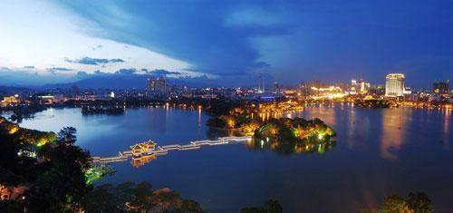
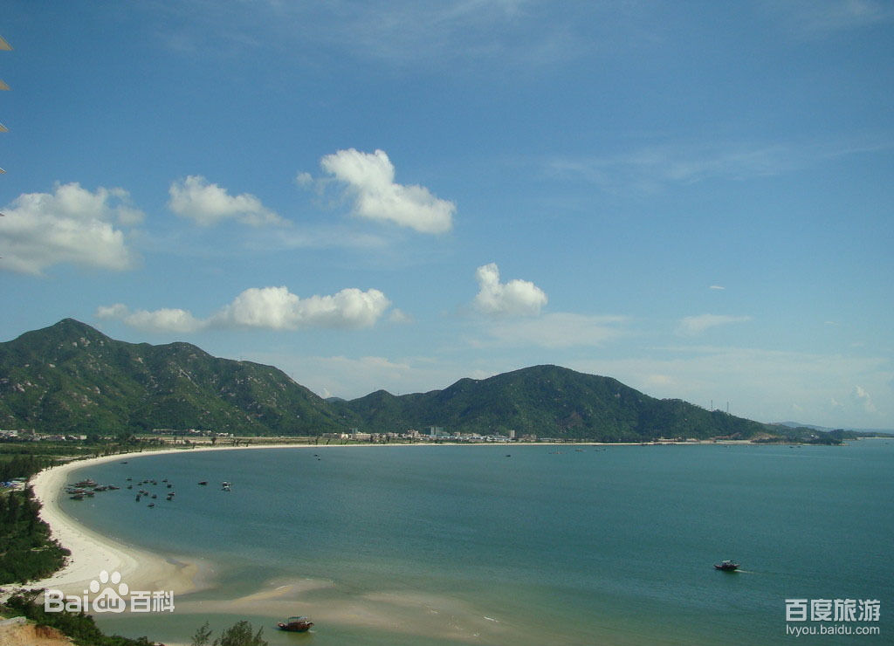
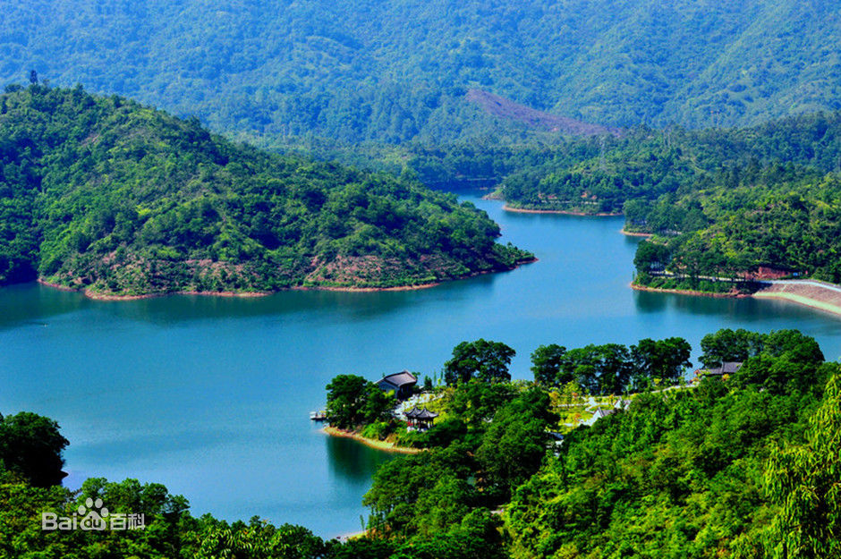

惠州西湖
风景名胜区地处广东省东南部惠州市惠城中心区，由西湖景区和红花湖景区组成，总面积20.91平方公里，其中水域面积3.13平方公里，是以素雅幽深的山水为特征、以历史文化为底蕴、以休闲和观光为主要功能的国家级风景名胜区和国家AAAA级旅游景区。其山川秀邃、幽胜曲折、浮洲四起、青山似黛，古色古香的亭台楼阁隐现于树木葱茏之中，景域妙在天成，有“苎萝西子”之美誉，并有“大中国西湖三十六，唯惠州足并杭州”的史载。历代以苏东坡为代表的400多位文人墨客曾踏足惠州，为西湖留下了宝贵的文化遗产；这些历史古迹和革命胜迹与西湖的青山秀水融为一体，相得益彰
位于西湖景区西南部的红花湖景区，原为惠州西湖三大水源之一“水帘水”的源地，1991年筑坝成湖，以湖区最高峰红花嶂命名红花湖。因其自然生态环境优异，被誉为惠州城市之肺，环湖18公里绿道被誉为“绿廊花漾”。这里山环水绕、重峦叠嶂，水帘飞瀑、峭壁流泉，挂榜题名、儒风浩荡，卧龙香雪、林幽花艳，犹如一幅动静相生的风光画卷。其北面高榜山雄峻蔚然，势若龙盘，地貌钟灵毓秀，有“惠州白云山”之誉，是市民登高揽胜、健身运动的最佳去处。

巽寮湾
是粤东数百公里中海水最洁净的海湾之一。处在中国新改革开放的深汕特别合作区旁，除了一类的海水及沙滩沙质外，海滩上软细洁白的海沙含沙量高达99%。踏足沙滩，你可以在沙滩上脱下鞋子尽情地嬉戏，感受脚板与细沙的摩擦依然是个舒适休闲的海滨度假地。踏足沙滩，享受一流的阳光和空气，领略蓝天、白云、沙滩、海浪的养生诗情画意，尽情欣赏琳琅满目的海底世界，度过难忘的蓝色之旅。境内有国家级海龟自然保护区港口海龟湾，有地处沿海的巽寮海湾旅游区和南门海湾右边的是猴子湾，有被誉为“广东省历史文化名城”的平海古城和建于明清时期颇具特色的古镇村落，有远近闻名的九龙峰旅游区，有省级的古田自然保护区，有“东江红都”高潭老区等众多旅游景区景点。
乾隆年间，一群客家居民来到这荒僻之地，搭茅“寮”定居。 巽寮位于惠东县的大亚湾畔，依山傍海，环境幽雅。海滨 10 多里的半月形海滩，沙细洁白。海上的大小洲屿如同仙山琼阁。巽寮各处的奇周到怪石，富有海角天涯的景色。特别是磨子石，是天作地造一座大型的石磨，两块重达百吨的巨石相叠而成，旁边有各种各样形态奇特的石群，像满地米、石一样，有鬼斧神工之妙，是巽寮石景观的典型代表。

红花湖
红花湖位于市区西南侧的龙丰上排大石壁、红花嶂一带山地，景区面积9平方公里。红花湖，是惠州西湖的活水之源，为惠州西湖古八景的“水帘飞瀑”所在。
红花湖景区，创建于1991年，属水库型风景区，由红花湖水库、大石壁水库、东西入口公园组成。库区水面1.62平方公里，水深28米，库容1900万立方米，集雨面积6.85平方公里。湖区山林茂盛，湖中建有望湖亭。
惠州西湖的活水之源，为惠州西湖古八景的“水帘飞瀑”所在。红花湖景区位于市区西南侧的龙丰上排大石壁、红花嶂一带山地，景区面积9平方公里。它创建于1991年，属水库型风景区，由红花湖水库、大石壁水库、东西南入口公园组成。库区水面1.62平方公里，水深28米，库容1900万立方米，集雨面积6.85平方公里。湖区山林茂盛，湖中建有望湖亭。
红花湖库区坐落在群山最高峰红花嶂西北面，
红花湖
红花湖
故借红花嶂定名为红花湖。红花湖是惠州西湖活水的来源，为彻底解决西湖污染问题，从1991年开始，经过3年多努力奋斗，市政府在西湖上游建设红花湖水库，引鲜活水入西湖，每年为西湖注入475万立方米的活水，为西湖洗两三次“澡”，改良西湖水质。